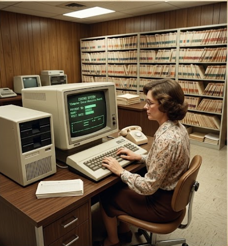
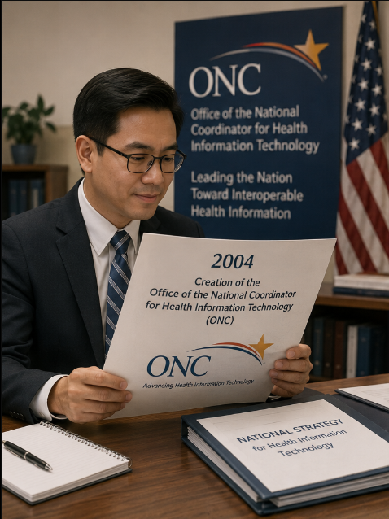
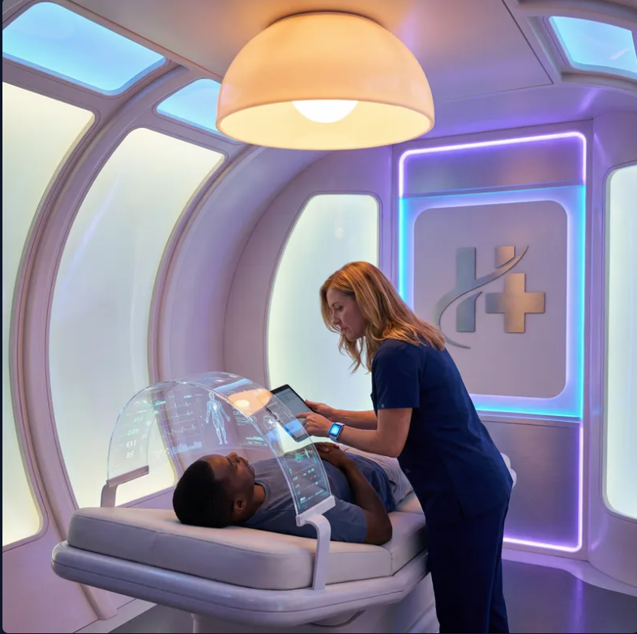

It was the first major documentation model that organized patient records systematically. It became the foundation of many modern Electronic Health Record systems.
It introduced a structured, problem-oriented approach to documenting patient care, making medical records more organized, consistent, and easier for healthcare professionals to follow.
It improved nursing documentation, communication, continuity of care, and clinical decision-making.
One of the first successful electronic medical record systems used in clinical practice, demonstrating that digital records could improve healthcare.
It demonstrated that patient information could be stored, managed, and retrieved electronically, paving the way for the development of modern Electronic Health Records (EHRs).
It introduced nurses to electronic documentation, improving the accuracy, accessibility, and efficiency of recording patient information.

This recommendation significantly influenced hospitals and policymakers to move toward electronic documentation.
It established a national vision for computer-based patient records, encouraging healthcare organizations to adopt electronic systems and improve information sharing.
It supported the transition from paper charts to electronic documentation, improving communication, continuity of care, and access to patient information for nurses.
The ONC became the leading organization promoting nationwide adoption and interoperability of EHRs.
It provided national leadership in developing standards, policies, and strategies that accelerated the adoption of Electronic Health Records across the United States.
It improved nurses' access to accurate patient information, strengthened communication among healthcare teams, and supported standardized electronic documentation.

This law accelerated EHR adoption by providing financial incentives to healthcare organizations, making it a major turning point.
It encouraged hospitals and healthcare providers to adopt certified Electronic Health Record (EHR) systems, leading to widespread implementation of digital patient records.
It increased the use of electronic documentation in nursing practice, improving patient safety, care coordination, and access to real-time patient information.
This is an ongoing period during which EHRs became commonly used in healthcare. It represents the widespread application of earlier milestones rather than a single breakthrough.
It marked the successful transition from paper-based records to digital systems, improving the accessibility, accuracy, and continuity of patient information across healthcare settings.
Nurses gained faster access to patient records, enhanced communication with healthcare teams, improved documentation accuracy, and better support for safe, patient-centered care.


Enhanced disease prediction, diagnosis, personalized treatment, and analysis of large healthcare datasets.
It represents the next stage in the evolution of Electronic Health Records by using healthcare data to provide predictive insights, automate routine tasks, and improve clinical outcomes.
Nurses benefit from AI-assisted decision support, more efficient documentation, early identification of patient risks, and additional time to focus on direct patient care.

Addressed patient confidentiality, cybersecurity, informed consent and responsible use of health information as digital records became widespread.
It established policies and regulations that protect patient privacy, strengthen cybersecurity, and promote the ethical use of digital health information.
Nurses are responsible for safeguarding patient confidentiality, using Electronic Health Records ethically, and complying with privacy and security regulations while delivering safe, patient-centered care.

Healthcare workers experienced stress due to adapting to Electronic Health Records. This event highlights the need for better training and a userfriendly EHR system for successful implementation.
It recognized that successful EHR implementation depends not only on technology but also on supporting healthcare professionals through training, workflow improvements, and system usability.
Nurses faced increased workload and documentation challenges during EHR implementation, emphasizing the importance of informatics training, technical support, and well-designed systems to improve efficiency and reduce stress.
Rapid digital changes make adaption more difficult.
It highlighted the importance of investing in digital infrastructure, staff training, and financial planning to ensure the successful adoption of modern healthcare technologies.
Nurses have had to adapt quickly to new digital systems through continuous learning, while healthcare organizations invest in training and technology to support efficient, high-quality patient care.
Differences in EHR proficiency reduced teamwork and highlighted the need for equal training and support during EHR implementation.
It emphasized that the successful use of Electronic Health Records depends on consistent training, digital competency, and collaboration among all healthcare professionals.
Nurses are encouraged to strengthen their digital skills through continuous education, improving teamwork, documentation accuracy, and the quality of patient care.
A significant improvement in healthcare safety and efficiency
It demonstrates how Electronic Health Records have transformed healthcare by improving the quality, safety, and efficiency of patient care through accurate and accessible digital information.
Nurses benefit from more accurate documentation, faster access to patient records, improved communication with the healthcare team, and enhanced patient safety through informed clinical decision-making.
.png)
.png)
A significant improvement in healthcare safety and efficiency
It demonstrated that successful EHR adoption depends not only on technology but also on supporting healthcare staff through proper training, workflow improvements, and continuous system optimization.
Nurses experienced improved access to patient information, enhanced communication and collaboration, more accurate documentation, and greater efficiency in delivering safe, patient-centered care.
Reflection
"Technology continues to transform healthcare, but compassionate nursing remains at the heart of every patient interaction."
Knowledge Gained
Through this activity, we gained a deeper understanding of the evolution of Electronic Health Records (EHRs) and the important role of nursing informatics in healthcare. We learned that each milestone contributed to improving patient safety, communication, documentation, and the overall quality of healthcare services. We also realized that while the transition to digital systems has brought challenges for healthcare professionals, it has also created more efficient, accurate, and accessible ways of managing patient information.
Commitment as Future Nurses
This evolution reinforces our commitment as future nurses to continuously sharpen both our hands on clinical skills and digital literacy, ensuring we can deliver safe, efficient, and compassionate care in an increasingly technology driven healthcare system.
Future Commitment
This activity also helped us appreciate how technology continues to transform the nursing profession. We recognized that EHRs not only make documentation more organized but also support better collaboration among healthcare professionals, allowing them to make informed decisions based on accurate and up to date patient information. Although adapting to new technologies may require time, training, and continuous learning, the long term benefits greatly outweigh the challenges.
Digital Literacy
As future nurses, we recognize the importance of developing our informatics skills, embracing technological advancements, and continuously adapting to innovations that support safe, efficient, and patient-centered care. We understand that being competent in using EHR systems is not only a technical skill but also a professional responsibility that contributes to patient safety, confidentiality, and high quality healthcare. This activity encouraged us to become more open to innovation and lifelong learning as we prepare for our future roles in the healthcare field.
Professional Development
Exploring the evolution of Electronic Health Records (EHRs) gave me a better understanding of their role in improving healthcare efficiency, accuracy, and patient safety. We must be competent in using EHR systems to provide safe, ethical, and patient-centered care while adapting to the continuous advancement of healthcare technology. Continuous learning will help us adapt to new healthcare technologies and changing clinical practices. I believe that mastering these systems will make us more confident and effective nurses in the future.
Healthcare Collaboration
As future healthcare professionals, Electronic Health Records will help us to improve the quality, safety and efficiency of healthcare services. They also improve communication collaboration between the members of the healthcare team. In addition, EHRs makes the documentation more organized and efficient allowing allowing healthcare professionals to focus on patient care.
Lifelong Learning
In the end, this activity reminded us that being a good nurse is not only about having clinical skills but also about being willing to learn and adapt to the changes in healthcare. We hope to apply these lessons in the future as we provide the best care for our patients.
Compassionate Nursing Care
Furthermore, this activity reminded us that technology should always serve as a tool to enhance, rather than replace, compassionate and patient-centered nursing care. As future nurses, we must strive to balance technological competence with empathy, professionalism, and ethical responsibility. By continuously improving our digital literacy and embracing innovations in health informatics, we can contribute to safer, more efficient, and higher-quality healthcare while maintaining the human connection that remains at the heart of the nursing profession.
References
The following references were used in creating this Nursing Informatics timeline and reflection.
Problem-Oriented Medical Record (POMR)
Weed, L. L. Medical Records That Guide and Teach. New England Journal of Medicine.
https://www.nejm.org/doi/full/10.1056/NEJM196810032791401Development of the COSTAR (Computer Stored Ambulatory Record) System
Barnett, G. O. The Application of Computer-Based Medical Record Systems. Semantic Scholar PDF.
https://pdfs.semanticscholar.org/0756/c5c036d2c60de383189f7b3d5aab7098ac23.pdfComputer-Based Patient Record
Institute of Medicine. The Computer-Based Patient Record: An Essential Technology for Health Care.
https://nap.nationalacademies.org/catalog/1841/the-computer-based-patient-record-an-essential-technology-for-health-careOffice of the National Coordinator (ONC)
U.S. Department of Health & Human Services. History of the Office of the National Coordinator for Health Information Technology.
https://www.healthit.gov/topic/about-onc/history-oncHealth Information Technology for Economic and Clinical Health (HITECH) Act
U.S. Department of Health & Human Services. HITECH Act.
https://www.healthit.gov/topic/laws-regulation-and-policy/hitech-actDevelopment of the Electronic Health Record
American Medical Association. Development of the Electronic Health Record.
https://journalofethics.ama-assn.org/article/development-electronic-health-record/2011-03Benefits and Challenges of Electronic Health Records
National Center for Biotechnology Information. Benefits and Challenges of Electronic Health Records.
https://pmc.ncbi.nlm.nih.gov/articles/PMC5171496/Electronic Health Records and Clinical Practice
ScienceDirect. Electronic Health Records and Clinical Practice.
https://www.sciencedirect.com/science/article/abs/pii/S1053429619300426Electronic Health Records
Cureus. Electronic Health Records: Benefits and Challenges in Modern Healthcare.
https://www.cureus.com/articles/101576Electronic Health Record Adoption and Its Effects on Healthcare Staff
International Journal of Environmental Research and Public Health. Electronic Health Record Adoption and Its Effects on Healthcare Staff.
https://www.mdpi.com/1660-4601/21/11/1430Electronic Health Records and Nursing Informatics
National Library of Medicine. Electronic Health Records and Nursing Informatics.
https://pubmed.ncbi.nlm.nih.gov/39595697/The Advent of Electronic Health Records (EHRs)
Google Scholar search results for peer-reviewed literature related to the evolution and adoption of Electronic Health Records (EHRs).
https://scholar.google.com/scholar?hl=en&as_sdt=0%2C5&q=The+Advent+of+Electronic+Health+Records+%28EHRs%29Electronic Health Records Research Collection
Google Scholar search used to locate scholarly publications on Electronic Health Records, Nursing Informatics, Artificial Intelligence, and Health Information Technology.
https://scholar.google.com/scholar?hl=en&as_sdt=0%2C5&q=Electronic+Health+Records